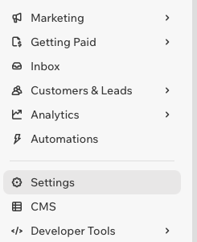
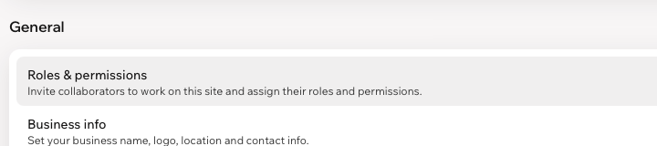
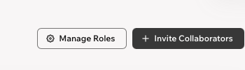
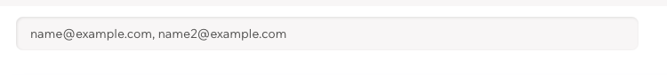
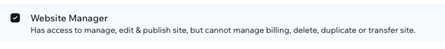
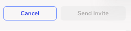

1 Open Settings
From the dashboard of the website you own, choose Settings in the left menu.

Tap the image to enlarge.Give Brian editing access while keeping your Wix website in your hands.
A guided setup from Olsen AutomationThese cropped screenshots show the Wix dashboard, rather than the website editor. Your dashboard may look slightly different.
From the dashboard of the website you own, choose Settings in the left menu.

Tap the image to enlarge.Under General, choose Roles & permissions.

Tap the image to enlarge.Choose Invite Collaborators.

Tap the image to enlarge.Paste brian@olsenautomation.com into the email field.

Tap the image to enlarge.Select Website Manager. Leave Admin (Co-Owner) unselected.

Tap the image to enlarge.After entering the email and choosing the role, select Send Invite. The example button is disabled because its email field is empty.

Tap the image to enlarge.